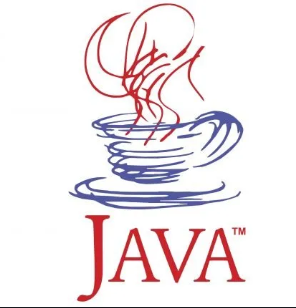

¿Qué es Java? Java es un lenguaje de programación de propósito general, orientado a objetos y basado en clases. Desarrollado por Sun Microsystems en 1995, Java se ha convertido en uno de los lenguajes más populares y versátiles en el mundo del desarrollo de software.
¿Dónde se utiliza Java? Java se utiliza en una amplia variedad de aplicaciones y plataformas, incluyendo aplicaciones web, aplicaciones móviles (especialmente en Android), software empresarial, aplicaciones de servidor y sistemas embebidos. Su portabilidad, seguridad y robustez lo han hecho esencial en muchas industrias.
¿Cómo se utiliza Java? Java se utiliza principalmente a través de la creación de aplicaciones que se ejecutan en la Máquina Virtual de Java (JVM), lo que permite que el código Java se ejecute en cualquier plataforma que tenga una JVM. La programación orientada a objetos en Java facilita la organización y reutilización del código, promoviendo prácticas de desarrollo más limpias y eficientes.
Descargando e instalando JDK+IDE NETBEANS
No te acuerdas lo básico de POO, no te preocupes, haz clic en el siguiente botón para ir a la sección de repaso:
Repaso